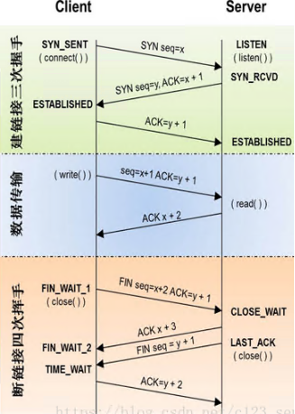

公用函数
socket.socket(family[,type[,protocol]])：创建套接字；
family：AF_INET、AT_UNIX（一般为第一个）
type：SOCK_STREAM、SOCK_DGRAW（第一个为TCP，第二个为UDP）
protocol：（一般不填，默认为0）
返回值可作为下面函数引用
s.recv(bufsize[,flag])：接收TCP数据，数据以字符串形式返回，s为socket创建时的返回值；
bufsize：指定要接收的最大数据量。
flag：提供有关消息的其他信息，通常可以忽略。
返回数据，以字符串形式返回。
s.send(string)：发送TCP数据，将string中的数据发送到连接的套接字。
string：要发送的数据
返回值是要发送的字节数量，该数量可能小于string的字节大小。
s.sendall(string)：完整发送TCP数据，将string中的数据发送到连接的套接字，但在返回之前会尝试发送所有数据。
string：要发送的数据
成功返回None，失败则抛出异常。
s.recvfrom(bufsize)：接收UDP数据，与recv()类似，
bufsize：指定要接收的最大数据量。
返回值是（data,address）。其中data是包含接收数据的字符串，address是发送数据的套接字地址。
s.sendto(data,addr)：发送UDP数据，将数据发送到套接字。
data：要发送的数据。
address是形式为（ipaddr，port）的元组，指定远程地址。返回值是发送的字节数。
返回值是要发送的字节数量。
s.close()：关闭套接字
s.getpeername()：返回连接套接字的远程地址。返回值通常是元组（ipaddr,port）。
s.getsockname()：返回套接字自己的地址。通常是一个元组(ipaddr,port)
s.setsockopt(level,optname,value)：设置给定套接字选项的值。
s.getsockopt(level,optname[.buflen])：返回套接字选项的值。
s.settimeout(timeout)：设置套接字操作的超时期，timeout是一个浮点数，单位是秒。值为None表示没有超时期。一般，超时期应该在刚创建套接字时设置，因为它们可能用于连接的操作（如connect()）
s.gettimeout()：返回当前超时期的值，单位是秒，如果没有设置超时期，则返回None。
s.fileno()：返回套接字的文件描述符。
s.setblocking(flag)：如果flag为0，则将套接字设为非阻塞模式，否则将套接字设为阻塞模式（默认值）。非阻塞模式下，如果调用recv()没有发现任何数据，或send()调用无法立即发送数据，那么将引起socket.error异常。
s.makefile()：创建一个与该套接字相关连的文件
服务器端函数
s.bind(address)：绑定地址address到套接字在AF_INET下,以元组（host,port）的形式表示地址。
address：一般写成("ip",port)
s.listen(backlog)：开始TCP监听。
backlog：指定在拒绝连接之前，操作系统可以挂起的最大连接数量。该值至少为1，大部分应用程序设为5就可以了。
s.accept()：被动接受TCP客户端连接,(阻塞式)等待连接的到来。
connection,address：此为返回值，其中第一个元素（connection）是新的socket对象，服务器通过它与客户通信；第二个元素（address）是客户的internet地址。
客户端函数
s.connect()：主动初始化TCP服务器连接，。一般address的格式为元组（hostname,port），如果连接出错，返回socket.error错误。
s.connect_ex()：connect()函数的扩展版本,出错时返回出错码,而不是抛出异常
关于TCP的“三次握手和四次挥手”：
1.三次握手：
客户端向服务器端发送连接（我要连接到你了）
服务器告诉客户端可以连接（你可以连接了）
服务器开始正式连接，之后就可以通信接收和发送数据了（开始发送和接收数据了）
2.四次挥手：
客户端向服务器端发送断开请求（我要断开了）
服务器告诉客户端可以断开响应（那你断开吧）
服务器断开连接（我断开了）
客户端断开连接（我也断开了）
